Ableitung der Umkehrfunktion
1. Satz
Sei  eine umkehrbare, differenzierbare Funktion mit der Umkehrfunktion 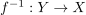 mit 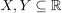 sowie
eine umkehrbare, differenzierbare Funktion mit der Umkehrfunktion 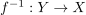 mit 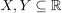 sowie  und
und  Dann gilt
Dann gilt
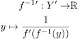
1
mit 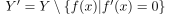
2. Beweis
2.1. Differenzierbarkeit
2.2. Ableitung
Aufgrund der Definition der Umkehrfunktion gilt
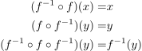
2
Aufgrund der Kettenregel für mehrere Kompositionen gilt:
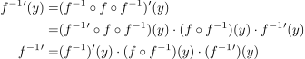
3
Etwas formalismus notwendig:
- umkehrbarkeit bei ableitung 0
-> nicht möglich Für 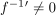 und 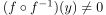 gilt:
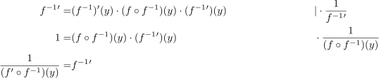
4